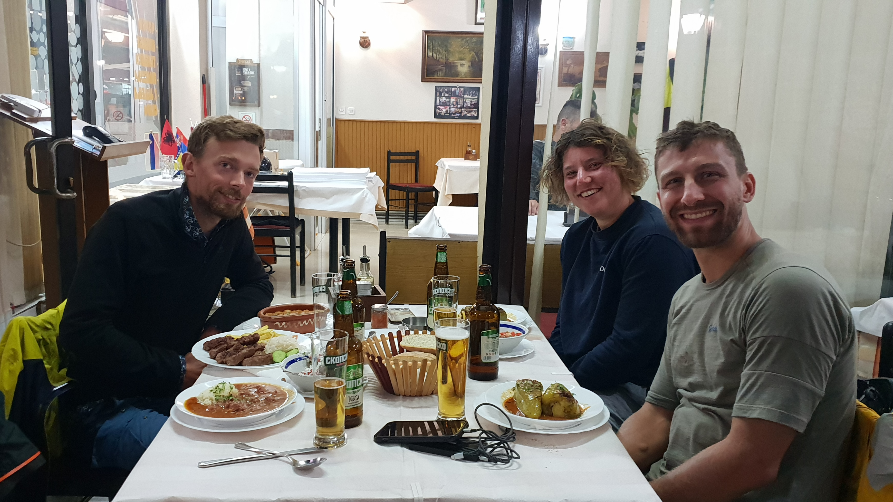
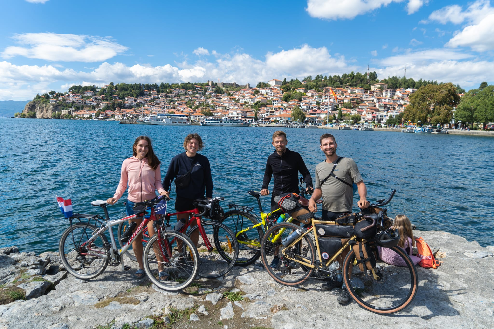
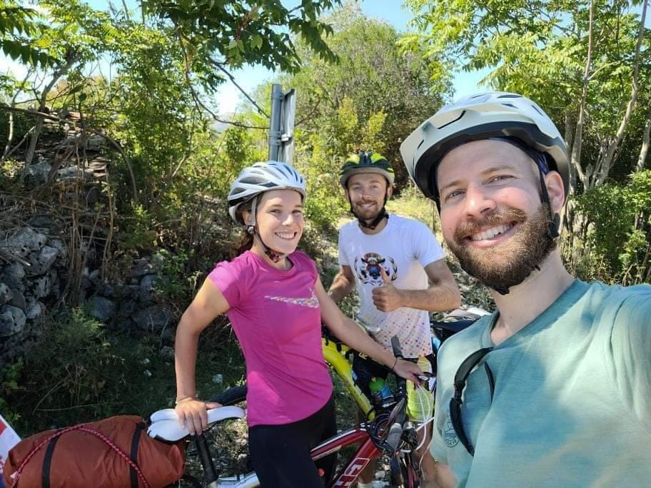

Alex
Imali smo priliku upoznati Alexa jedne tople večeri u Skoderu u Albaniji. Alex je 30-ogodišnji Francuz koji je u ljeto 2022. krenuo na avanturu od 6 mjeseci (potencijalno i duže) od Pariza do Nepala.
Umut-Ali
Umutov Youtube video putovanja
.jpg)
Umut-Ali nesebično nas je ugostio u svom stanu u Istanbulu. Prilikom našeg druženja imali smo priliku slušati o njegovim brojnim zgodama na biciklu, ali i pješačkim avanturama. U ljeto 2022. godine Umut-Ali je na dva kotača prošao put od Istanbula sve do Italije kako bi posjetio svoju djevojku.
Lara
Mlada studentica Lara uputila se u kolovozu 2022. sa sjevera Njemačke prema Istanbulu kako bi tamo odradila erasmus praksu. Upoznali smo se sasvim slučajno na cesti u okolici Tirane (Albanija). Odmah smo počeli pričati i zajedno voziti. Zajedno smo vozili i kampirali sljedeća 3 dana, a kako smo i mi svoje putovanje završili u Istanbuli imali smo priliku i ondje se družiti. Lara je jedina djevojka koju smo do sada upoznali, a da se na ovakav pothvat odlučila sama zbog čega joj se uistinu divimo.
Simon
Mladi Švicarac nakon višegodišnjeg rada, dao je otkaz i uputio se u avanturu života. U proljeće 2022. krenuo je iz Zuricha prema Tajlandu (s time da se dijelom puta služio zrakoplovom).